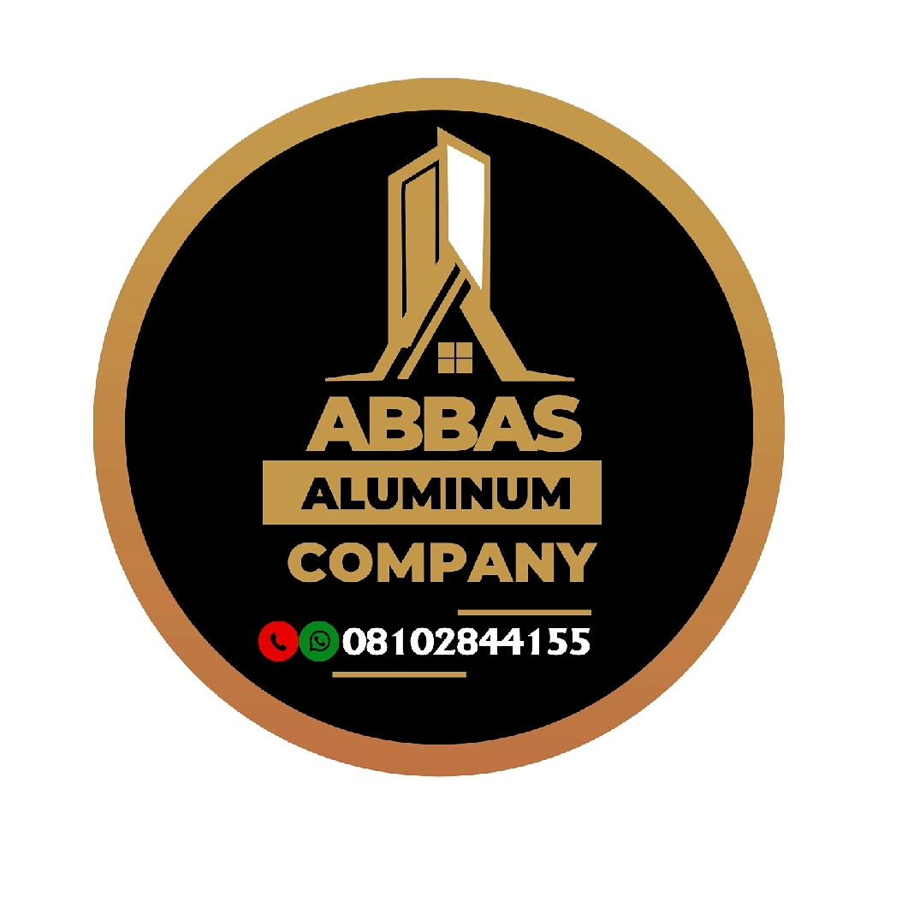

|  | Abdulhameed, Abdulazeez27 Araromi Abbas, Aromaradu Area, Apaokagi Street, Adeta Ilorin kwara State PHONE NO: +2348102844155, +2349123881342 E-MAIL: aabdulhameed066@gmail.com |
To work in a firm with a professional work driven environment in order to acquire the required skills and knowledge that will give me expertise. Also, working with existing member of the staff and facilities, contributing the best of my practical and theoretical knowledge so as to improve organizational objectives and to be part of the company success story.
| Date of Birth: | 30th December, 1992 |
| Marital Status: | Single |
| Sex: | Male |
| State of Origin: | Kwara |
| Local Government: | Ilorin West |
| Nationality: | Nigerian |
| Chartered Institute of Environmental Health and Safety - HSE 1,2 & 3 | 2019 |
| University of Ilorin, Ilorin, Kwara State, Nigeria - B.Eng (Civil Engineering) | 2018 |
| Government Day Secondary School Oke ogbe, Kwara State - Senior Secondary School Certificate | 2012 |
| Khadijat Memorial Nursery and Primary School, Adeta, Ilorin - First School Leaving Certificate | 2005 |